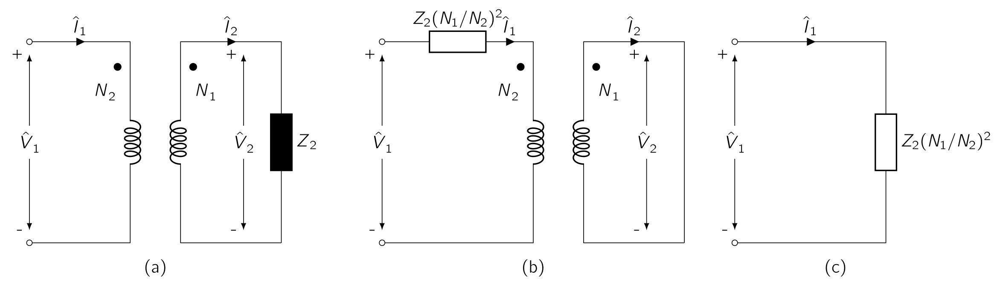
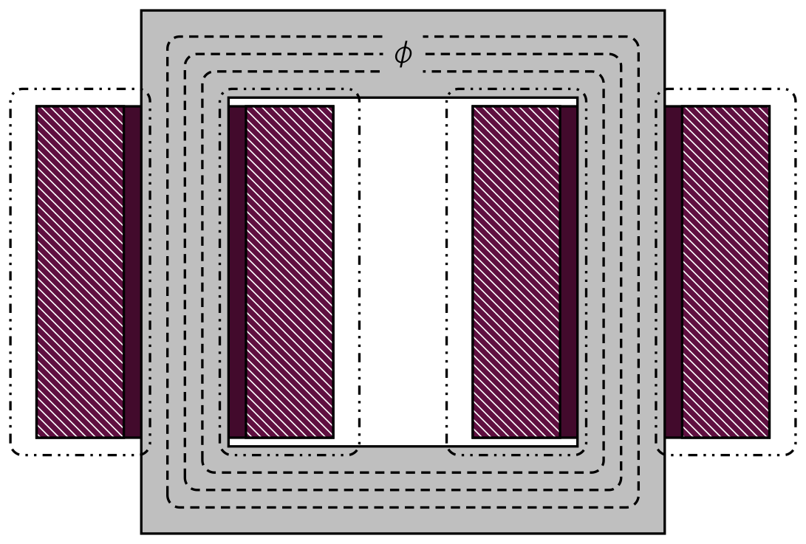
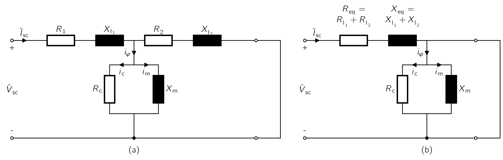
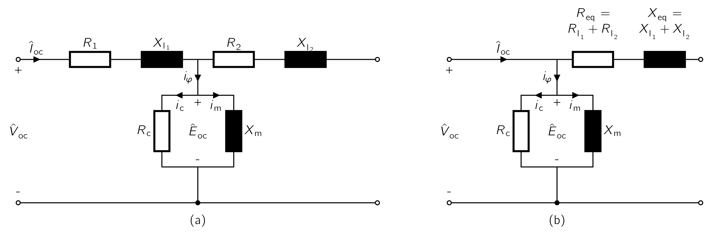
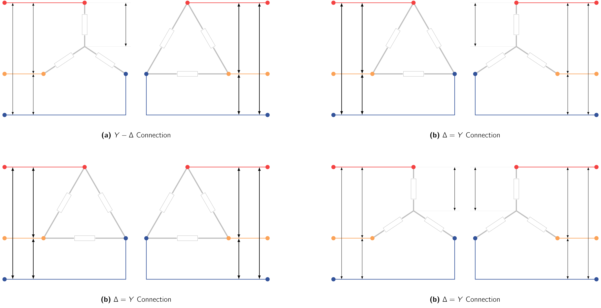

2
Transformers
2.1 The Stationary Electric Machine
Before we continue on with electric drives, it is worthwhile to discuss particular aspects of the
theory of magnetically-coupled circuits, with a special emphasis on the
-
electric generation at the most economical generator voltage,
-
power transfer at the most economical transmission voltage, and
-
power utilization at the most suitable voltage,
for the particular utilisation device. The transformer is also widely used in low-power, low-current electronic and control circuits for performing such functions as:
-
matching the impedances of a source and its load for maximum power transfer,
-
isolating one circuit from another, or
-
isolating direct current while maintaining ac continuity between two circuits.
The transformer is one of the simpler devices made from two
Therefore,
our
study
of
the
transformer
will
serve
as
a
bridge
between
the
introduction
to
magnetic-circuit
analysis
we
conducted
previously
and
the
more
detailed
study
of
electric
drives
to
follow.
2.1.1 An Overview of Transformers
To give a brief definition, a transformer consists of two
The essence of transformer action requires only the existence of a
Such a transformer is commonly called an iron-core transformer which makes majority of the market.
The chapter is concerned primarily with iron-core transformers. As we looked at the topic previously, to reduce the losses caused
by eddy currents in the core, the magnetic circuit usually consists of a
- Core
-
Shown in Fig. 2.1 a, the windings are wound around two legs of a rectangular magnetic core.
- Shell
-
Shown in Fig. 2.1 b the windings are wound around the centre leg of a three-legged core.
Silicon-steel
laminations
(0,55mm)
thick
are
generally
used
for
transformers
operating
at
frequencies
below
a
few
hundred
Hz
.
Silicon
steel
has
the
desirable
properties
of
low
cost,
low
core
loss,
and
high
permeability
at
high
flux
densities.
The
cores
of
small
transformers
used
in
communication
circuits
at
high
frequencies
and
low
energy
levels
are
sometimes
made
of
compressed
powdered
ferromagnetic
alloys
known
as
ferrites.
In each of these configurations, most of the flux is confined to the core and therefore links both windings. The windings also produce additional flux, known as leakage flux , which links one winding without linking the other.
Although leakage flux is a small fraction of the total flux, it plays an important role in determining the overall behaviour of the transformer which will be looked later.
In practice, leakage is reduced by subdividing the windings into sections placed as close together as possible. In the core-type construction, each winding consists of two sections, one section on each of the two legs of the core, the primary and secondary windings being concentric coils. In the shell-type construction, variations of the concentric-winding arrangement may be used, or the windings may consist of a number of thin “pancake” coils assembled in a stack with primary and secondary coils interleaved.
Information : Distribution Transformers
Provides
a
final
voltage
reduction
in
the
electric
power
distribution
system,
stepping
down
the
voltage
used
in
the
distribution
lines
to
the
level
used
by
the
customer.
Distribution transformers typically have ratings less than 200 kVA, although some national standards allow units up to 5000 kVA to be described as distribution transformers. Since distribution transformers are energized 24 hours a day (even when they don’t carry any load), reducing iron losses is vital in their design. They usually don’t operate at full load, so they are designed to have maximum efficiency at lower loads. To have better efficiency, voltage regulation in these transformers is kept to a minimum. Therefore, they are designed to have small leakage reactance.
2.2 Transformers under No-Load Conditions
Fig. 2.2 shows in schematic form a transformer with its secondary circuit open and an alternating voltage applied to its primary terminals.
To simplify the drawings, it is common on schematic diagrams of transformers to show the primary and secondary windings as if they were on separate legs of the core, as in Fig. 2.2 , even though the windings are actually interleaved in practice.
As
discussed
previously,
a
small
steady-state
current
(
),
called
the
| (2.1) |
where
is flux linkage of the primary winding (Wb).
| (2.2) |
At the moment we are neglecting the effects of primary leakage flux as it would create unnecessary complications. For all practical purposes, the flux contributes a small value to the core-flux, therefore we can neglect it. It does however play an important role in the behavior of transformers in real-life applications and taken into consideration.
If the transformer is sufficiently large, the effect of the no-load resistance can be neglected which would make the induced
EMF
very nearly equals
the applied voltage
.
Furthermore, the waveforms of voltage and flux are very
| (2.3) |
the induced voltage ( ) is therefore:
| (2.4) |
where is the maximum value of the flux (Wb) and , with frequency being (Hz). For the current and voltage reference directions shown in Fig. 2.2 , the induced EMF leads the flux by 90°. The RMS value of the induced EMF ( ) is:
| (2.5) |
If the resistive voltage drop is assumed negligible, the counter EMF equals the applied voltage. Under these conditions, if a sinusoidal voltage is applied to a winding, a sinusoidally varying core flux must be established whose maximum value satisfies the requirement that in Eq. ( 2.5 ) equal the rms value of the applied voltage. Therefore we can write:
| (2.6) |
Under these conditions, the core flux is determined solely by the applied voltage ( ), its frequency ( ), and the number of turns ( ) in the winding.
This relation applies not only to transformers but to any device with a sinusoidally-alternating voltage, as long as the resistance and leakage-inductance voltage drops are negligible.
The core flux is fixed by the applied voltage, and the required exciting current is determined by the magnetic properties of the core. The exciting current must adjust itself so as to produce the MMF required to create the flux demanded by Eq. ( 2.6 ) .
Due to the non-linear magnetic properties of iron, the waveform of the exciting current differs from the waveform of the flux, which we have looked at Fig. 1.8 in Chapter 1 .
If the exciting current is analysed using Fourier-series, it is found to consist of a
fundamental component and a series of
odd harmonics
.
The
in-phase
component
supplies
the
power
absorbed
by
hysteresis
and
eddy-current
losses
in
the
core.
It
is
referred
to
as
Information : Effect of Harmonics
Except in problems concerned directly with the effects of harmonic currents, the exciting-current waveform distortions can be assumed negligible, as the exciting current itself is small, especially in large transformers.
For example, the exciting current of a typical power transformer is about 1% to 2% of full-load current. In the end, the effects of the harmonics usually are dominated out by the sinusoidal-currents supplied to other linear elements in the circuit.
The exciting current can then be represented by an equivalent sinusoidal current which has the same RMS value and frequency and produces the same average power as the actual exciting current. Such representation is essential to the construction of a phasor diagram , which represents the phase relationship between the various voltages and currents in a system in vector form. Each signal is represented by a phasor whose length is proportional to the amplitude of the signal and whose angle is equal to the phase angle of that signal as measured with respect to a chosen reference signal.
In Fig. 2.3 , the phasors and respectively, represent the RMS values of the induced EMF and the flux. The phasor represents the RMS value of the equivalent sinusoidal exciting current. It lags the induced emf by a phase angle . The core loss , equal to the product of the in-phase components of the and , is given by:
| (2.7) |
Information : Electric Arc Furnace
An electric arc furnace (EAF) is a furnace that heats material by means of an electric arc.
An Industrial EAF range in size from small units of approximately one-tonne capacity, used in foundries for producing cast iron products, up to about 400-tonne units used for secondary steelmaking. Industrial EAF temperatures can reach 1,800 ∘ C , while laboratory units can exceed 3,000 ∘ C.
As an example, a mid-sized modern steelmaking furnace would have a transformer rated about 60,000,000 volt-amperes (60 MVA), with a secondary voltage between 400 and 900 volts and a secondary current in excess of 44,000 amperes.
In electric arc furnaces, the material inside the furnace (referred to as a charge) is directly exposed to an electric arc, and the current from the electrode terminals passes through the charge material. Arc furnaces differ from induction furnaces, which use eddy currents to heat the charge.
2.3 The Effect of Secondary Current on an Ideal Transformer
As a first approximation, consider a transformer with a primary winding of turns and a secondary winding of turns, as shown schematically in Fig. 2.5 . Please observe the secondary current is defined as positive out of the winding, therefore positive secondary current produces an MMF in the opposite direction from that created by positive primary current.
Let
us
assume
the
properties
of
this
transformer
are
idealised
under
the
assumption
that
winding
resistances
are
negligible,
and
all
the
flux
is
confined
to
the
core
and
links
both
windings.
These properties are closely approached but never actually attained in practical transformers.
A hypothetical transformer having these properties is often called an ideal transformer . Under the above assumptions, when a time-varying voltage is given on the primary terminals, a core flux must be established such that the counter emf equals the impressed voltage. Therefore:
| (2.8) |
The core flux also links the secondary and produces an induced emf , and an equal secondary terminal voltage , given by
| (2.9) |
From the ratio of Eq. ( 2.8 ) and Eq. ( 2.9 ) :
| (2.10) |
An ideal transformer transforms voltages in the direct ratio of the turns in its windings.
Now let’s have a load and connect it to the secondary. A current
and an
MMF
are
then present in the secondary. Given that the core permeability is assumed very large and since the impressed
primary voltage sets the core flux as specfied by
Eq. (
2.8
)
, the core flux is unchanged by the presence
of a load on the secondary, and hence the net exciting mmf acting on the core
| (2.11) |
From Eq. ( 2.11 ) we see that a compensating primary MMF must result to cancel that of the secondary. We can write it as:
| (2.12) |
Therefore we see that the requirement that the net MMF remain unchanged is the means by which the primary “knows” of the presence of load current in the secondary; any change in mmf flowing in the secondary as the result of a load must be accompanied by a corresponding change in the primary mmf.
For the reference directions shown in Fig. 2.5 the mmf’s of and are in opposite directions and therefore compensate.
The net mmf acting on the core therefore is zero, in accordance with the assumption that the exciting current of an ideal transformer is zero. From Eq. ( 2.12 ) :
| (2.13) |
Therefore an ideal transformer transforms currents in the inverse ratio of the turns in its windings. Also notice from Eq. ( 2.10 ) and Eq. ( 2.13 ) that:
| (2.14) |
This means, the instantaneous power input to the primary equals the instantaneous power output from the secondary, a necessary condition because all dissipative and energy storage mechanisms in the transformer have been neglected.

An additional property of the ideal transformer can be seen by considering the case of a sinusoidal applied voltage and an impedance load. Phasor symbolism can be used. The circuit is shown in simplified form in Fig. 2.6 a, in which the dotmarked terminals of the transformer correspond to the similarly marked terminals in Fig. 2.5 .
The dot markings indicate terminals of corresponding polarity; i.e., if one follows through the primary and secondary windings of Fig. 2.5 , beginning at their dot-marked terminals, one will find that both windings encircle the core in the same direction with respect to the flux. Therefore, if one compares the voltages of the two windings, the voltages from a dot-marked to an unmarked terminal will be of the same instantaneous polarity for primary and secondary.
In other words, the voltages and in Fig. 2.6 a are in phase. Also currents and are in phase as seen from Eq. ( 2.12 ) .
The polarity of is defined as into the dotted terminal and the polarity of is defined as out of the dotted terminal.
We next investigate the impendance transformation properties of the ideal transformer. In phasor form, Eq. ( 2.10 ) and Eq. ( 2.13 ) can be expressed as
From these equations we can derive the following relation:
| (2.17) |
Noting that the load impedance is related to the secondary voltages and currents
| (2.18) |
where is the complex impedance of the load. Consequently, as far as its effect is concerned, an impedance in the secondary circuit can be replaced by an equivalent impedance in the primary circuit, provided the following condition is assumed true:
| (2.19) |
Therefore, the three circuits of Fig. 2.6 are indistinguishable as far as their performance viewed from terminals ab is concerned. Transferring an impedance from one side of a transformer to the other in this fashion is called referring the impedance to the other side; impedances transform as the square of the turns ratio.
In a similar manner, voltages and currents can be referred to one side or the other by using Eq. ( 2.15 ) to evaluate the equivalent voltage and current on that side.
2.4 Reactances and Types of Equivalent Circuits
The
departures
of
an
actual
transformer
from
those
of
an
ideal
transformer
must
be
included
to
a
greater
or
lesser
degree
in
most
analyses
of
transformer
performance.
A
more
complete
model
must
take
into
account
the
effects
of
winding
resistances,
leakage
fluxes,
and
finite
exciting
current
due
to
the
finite
The analysis of these high-frequency problems is beyond the scope of the lecture. In addition, to keep thing simple, the capacitances of the windings will be neglected.
Two methods of analysis by which departures from the ideal can be taken into account:
- 1.
- An equivalent-circuit technique based on physical reasoning,
- 2.
- A mathematical approach based on the classical theory of magnetically coupled circuits.
Both methods are in everyday use, and both have very close parallels in the theories of rotating machines.
As it offers an excellent example of the thought process involved in translating physical concepts to a quantitative theory, the equivalent circuit technique is presented here.
To begin the development of a transformer equivalent circuit, we first consider the primary winding. The total flux linking the
primary winding can be divided into two
- 1.
- The resultant mutual flux, confined essentially to the iron core and produced by the combined effect of the primary and secondary currents, and
- 2.
- The primary leakage flux, which links only the primary.
where for simplicity the primary and secondary windings are shown on opposite legs of the core.

The leakage flux induces voltage in the primary winding which adds to the mutual flux. Given the
leakage path is largely in air, this flux and the voltage induced by it vary linearly with primary current
.
It can therefore be represented by a
| (2.20) |
Of course, it is also worth mentioning, there will be a voltage drop in the primary resistance .
We now see the primary terminal voltage consists of three components: the drop in the primary resistance, the drop arising from primary leakage flux, and the emf induced in the primary by the resultant mutual flux.
The resultant mutual flux links both the primary and secondary windings and is created by their combined MMF ’s. It is convenient to treat these mmf’s by considering the primary current must meet two requirements of the magnetic circuit:
- 1.
- It must not only produce the mmf required to produce the resultant mutual flux,
- 2.
- It must also counteract the effect of the secondary MMF which acts to demagnetize the core.
An alternative viewpoint is that the primary current must not only magnetize the core, it must also supply current to the load connected to the secondary.
According to this picture, it is convenient to resolve the primary current into two
- 1.
- an exciting component, and
- 2.
- a load component.
The exciting component
is defined as the additional primary current required to produce the resultant mutual flux. It
is a nonsinusoidal current of the nature described in Section 2.2.
| (2.21) |
and from Eq. ( 2.21 ) we see that
| (2.22) |
From Eq. ( 2.22 ) , we see that the load component of the primary current equals the secondary current referred to the primary exactly as in an ideal transformer.
The exciting current can be treated as an equivalent sinusoidal current , and can be resolved into a core-loss component in phase with the emf and a magnetizing component lagging by 90 ° . In the equivalent circuit the equivalent sinusoidal exciting current is accounted for by means of a shunt branch connected across , comprising a coreloss resistance in parallel with a magnetizing inductance whose reactance, known as the magnetizing reactance, is given by
| (2.23) |
In the equivalent circuit of the power accounts for the core loss due to the resultant mutual flux. is referred to as the magnetizing resistance or core loss resistance and together with forms the excitation branch of the equivalent circuit, and we will refer to the parallel combination of and as the exciting impedance .
When is assumed constant, the core loss is thereby assumed to vary as or as , where is the maximum value of the resultant mutual flux. Strictly speaking, the magnetizing reactance ( ) varies with the saturation of the iron.
When is assumed constant, the magnetizing current is thereby assumed to be independent of frequency and directly proportional to the resultant mutual flux. Both and are usually determined at rated voltage and frequency; they are then assumed to remain constant for the small departures from rated values associated with normal operation.
We will next add to our equivalent circuit a representation of the secondary winding. We begin by recognizing that the resultant mutual flux ( ) induces an EMF in the secondary, and given this flux links both windings, the induced-emf ratio must equal the winding turns ratio, i.e.,
| (2.24) |
just
as
in
an
ideal
transformer.
This
voltage
transformation
and
the
current
transformation
of
Eq.
(
2.22
)
can
be
accounted
for
by
introducing
an
ideal
transformer
in
the
equivalent
circuit.
Just
as
is
the
case
for
the
primary
winding,
the
EMF
(
)
is
not
the
secondary
terminal
voltage,
however,
because
of
the
secondary
resistance
and
because
the
secondary
current
(
)
creates
secondary
leakage
flux
.
The
secondary
terminal
voltage
(
)
differs
from
the
induced
voltage
by
the
voltage
drops
due
to
secondary
resistance
(
)
and
secondary
leakage
reactance
(
).
the actual transformer therefore can be seen to be equivalent to an ideal transformer plus external impedances. By referring all quantities to the primary or secondary, the ideal transformer can be moved out to the right or left, respectively, of the equivalent circuit. This is almost invariably done, with the ideal transformer not shown and all voltages, currents, and impedances referred to either the primary or secondary winding. Specifically,
| (2.25) |
| (2.26) |
and
| (2.27) |
The circuit is called the equivalent-T circuit for a transformer. Here, the referred secondary values are indicated with primes, for example, , and , to distinguish them from the actual values
In the discussion that follows we almost always deal with referred values, and the primes will be omitted. One must simply keep in mind the side of the transformers to which all quantities have been referred.
2.5 Understanding Transformer Behaviour
In
analysis
involving
the
transformer
as
a
circuit
element,
it
is
useful
to
adopt
one
of
several
approximate
forms
of
the
equivalent
circuit
The approximate equivalent circuits commonly used for constant-frequency power transformer analyses are summarized for comparison . All quantities in these circuits are referred to either the primary or the secondary, and the ideal transformer is NOT shown.
Calculations can often be greatly simplified by moving the shunt branch representing the exciting current out from the middle of the T circuit to either the primary or the secondary terminals.
These forms of the equivalent circuit are referred to as cantilever circuits.
The series branch is the combined resistance and leakage reactance of the primary and secondary, referred to the same side. This impedance is sometimes called the equivalent series impedance ( ) and its components are:
-
the equivalent series resistance ( ), and
-
equivalent series reactance ( ),
As compared to the equivalent-T circuit , the cantilever circuit introduces additional error in that it neglects the voltage drop in the primary or secondary leakage impedance caused by the exciting current. As the impedance of the exciting branch is typically quite large in large power transformers, the corresponding exciting current is quite small.
This error becomes insignificant in most situations involving large transformers.
Further
analytical
simplification
can
be
achieved
by
neglecting
the
exciting
current
As
a
final
note,
in
situations
where
the
currents
and
voltages
are
determined
The circuits have the additional advantage being the total equivalent resistance ( ) and equivalent reactance ( ) can be found from a very simple test in which one terminal is short-circuited. Whereas, the process of determining the individual leakage reactances ( and ) and a complete set of parameters for the equivalent-T circuit , as can be expected, more difficult.
Without some prior knowledge of the turns ratio.
It can be shown that, simply from terminal measurements, neither the turns ratio, the magnetizing reactance, or the leakage reactances are unique characteristics of a transformer equivalent circuit. As an example, the turns ratio can be chosen arbitrarily and for each choice of turns ratio, there will be a corresponding set of values for the leakage and magnetizing reactances which matches the measured characteristic. Each of the resultant equivalent circuits will have the same electrical terminal characteristics, a fact which has the fortunate consequence that any self-consistent set of empirically determined parameters will adequately represent the transformer.
There are two
-
first with the secondary short-circuited, and
-
then with the secondary open-circuited,
which are looked in detail below.

The short-circuit test can be used to find the equivalent series impedance:
Although the choice of winding to short-circuit is arbitrary, for the sake of this discussion we shall consider the short circuit to be applied to the transformer secondary and voltage applied to primary.
For convenience, the high-voltage side is usually taken as the primary in this test due to the equivalent series impedance is relatively small, typically an applied primary voltage on the order of 10 to 15 percent or less of the rated value will result in rated current.
The short-circuit impedance ( ) looking into the primary under these conditions is:
| (2.28) |
Because the impedance of the exciting branch (
)
is much larger than that of the secondary leakage impedance.
| (2.29) |
The approximation made here is equivalent to the approximation made in reducing the equivalent-T circuit to the cantilever equivalent.
the impedance seen at the input of this equivalent circuit is clearly:
given the exciting branch is directly shorted out by the short on the secondary.
Typically the instrumentation used for this test will measure the
RMS
magnitude of the applied voltage
(
), the short-circuit
current (
), and
the power (
).
Based upon these three
The equivalent impedance can, of course, be referred from one side to the other in the usual manner.
when all impedances are referred to the same side.
Strictly
speaking,
of
course,
it
is
possible
to
measure
and
directly
by
a
dc
resistance
measurement
on
each
winding.
However, no such simple test exists for the leakage reactances and .

The
open-circuit
test
is
performed
with
the
secondary
open-circuited
and
rated
voltage
impressed
on
the
primary.
Under
this
condition
an
exciting
current
of
a
few
percent
of
full-load
current
For convenience, the low-voltage side is usually taken as the primary in this test.
If the primary in this test is chosen to be the opposite winding from that of the short-circuit test, one must of course be careful to refer the various measured impedances to the same side of the transformer in order to obtain a self-consistent set of parameter values. . The open-circuit impedance looking into the primary under these conditions is
| (2.33) |
Because the impedance of the exciting branch is quite large, the voltage drop in the primary leakage impedance caused by the exciting current is typically negligible, and the primary impressed voltage very nearly equals the emf induced by the resultant core flux.
Similarly, the primary loss caused by the exciting current is negligible, so the power input very nearly equals the core loss . As a result, it is common to ignore the primary leakage impedance and to approximate the open-circuit impedance as being equal to the magnetizing impedance
| (2.34) |
The approximation made here is equivalent to the approximation made in reducing the equivalent-T circuit to the cantilever equivalent circuit
The impedance seen at the input of this equivalent circuit is clearly
since no current will flow in the open-circuited secondary. As with the short-circuit test, typically
the instrumentation used for this test will measure the rms magnititude of the applied voltage,
, the open-circuit
current
and the power
. Neglecting the
primary leakage impedance and based upon these three measurements, the magnetizing resistance and reactance
The values obtained are, of course, referred to the side used as the primary in this test. The open-circuit test can be used to obtain the core loss for efficiency computations and to check the magnitude of the exciting current. Sometimes the voltage at the terminals of the open-circuited secondary is measured as a check on the turns ratio.
Information : Measure from the Other Side
If desired, a slightly more accurate calculation of and by retaining the measurements of and obtained from the short-circuit test (referred to the proper side of the transformer) and basing the derivation on Eq. ( 2.33 ) . However, such additional effort is rarely necessary for the purposes of engineering accuracy.
2.6 Auto and Multiwinding Transformers
The core concept we have developed were for two-winding transformers only. However, they are also applicable to transformers with other winding configurations such as auto-transformers and multi-winding transformers which will be the focus here.
2.6.1 AutoTransformers
In Fig. 2.10 a, a two-winding transformer is shown with and turns on the primary and secondary windings respectively. The same transformation effect on voltages, currents, and impedances can also be obtained when these windings are connected as shown in Fig. 2.10 b.
In Fig. 2.10 b, winding is common to both the primary and secondary circuits.
This type of transformer is called an autotransformer . From construction point of view, it is little more than a normal transformer connected in a special way.
However, an important difference is the windings of the two-winding transformer are
electrically isolated
whereas those of
the autotransformer are connected directly together. In addition, in the autotransformer connection, winding
must be
provided with
They have lower leakage reactances, lower losses, and smaller exciting current and cost less than two-winding transformers when the voltage ratio does not differ too greatly from .
The following example illustrates the benefits of an autotransformer for those situations where electrical isolation between the primary and secondary windings is NOT an important consideration.
When a transformer is connected as an autotransformer as shown in Fig. 2.10 , the rated voltages of the autotransformer can be expressed in terms of those of the two-winding transformer as:
The effective turns ratio of the autotransformer is and the power rating of the autotransformer is equal to times that of the two-winding transformer, although the actual power processed by the transformer will NOT increase over that of the standard two-winding connection.
2.6.2 Multiwinding Transformers
Transformers
having
three
Transformers having a primary and multiple secondaries are frequently found in multiple-output Direct Current (DC) power supplies for electronic applications. Distribution transformers used to supply power for domestic purposes usually have two 120 V secondaries connected in series. Circuits for lighting and low-power applications are connected across each of the 120 V windings, while electric ranges, domestic hot-water heaters, clothes-dryers, and other high-power loads are supplied with 240 V power from the series-connected secondaries.
In a similar fashion, a large distribution system can be supplied through a three-phase bank of multiwinding transformers from two or more transmission systems having different voltages. In addition, the three-phase transformer banks used to interconnect two transmission systems of different voltages often have a third, or tertiary, set of windings to provide voltage for auxiliary power purposes in substations or to supply a local distribution system.
Static
capacitors
or
synchronous
condensers
can
be
connected
to
the
tertiary
windings
for
power
factor
correction
or
voltage
regulation.
Unfortunately equivalent circuits of multi-winding transformers are more complicated as they must take into account the leakage impedances associated with each pair of windings. Typically, in these equivalent circuits, all quantities are referred to a common base by use of the appropriate turns ratios as referring factors.
The exciting current is generally neglected in modelling for simplicity.
2.7 Poly-Phase Transformers
One
of
the
more
practical
applications
of
transformers
are,
of
course
in
the
use
of
the
the
grid.
Given
most
supplied
energy
across
vast
distances
are
poly-phase.

Three single-phase transformers can be connected to form a three-phase transformer bank in any of the four
Also shown are the voltages and currents resulting from balanced impressed primary line-to-line voltages ( ) and line currents ( ) when the ratio of primary-to-secondary turns is and ideal transformer behaviour are assumed.
The rated voltages and currents at the primary and secondary of the three-phase transformer bank depends on the connection used but the rated kVA of the three-phase bank is three times that of the individual single-phase transformers, regardless of the connection.
2.7.1 Connection Types
Star-Delta Connection Commonly used in stepping down from a high voltage to a medium or low voltage. One reason is for this is the presence of a neutral provided for grounding on the high-voltage side, a procedure which can be shown to be desirable in many cases.
Delta-Star Connection Commonly used for stepping up to a high voltage.
Delta-Delta Connection It has the advantage that one transformer can be removed for repair or disconnected for maintenance while the remaining two continue to function as a three-phase bank with the rating reduced to 58 percent of that of the original bank.
This is known as the open-delta, or V, connection.
Star-Star Connection
Seldom
used
because
of
difficulties
with
exciting-current
phenomena.
Instead
of
three
single-phase
transformers,
a
three-phase
bank
may
consist
of
one
three-phase
transformer
having
all
six
Calculations involving three-phase transformer banks under balanced conditions can be made by dealing with only one of the transformers or phases and recognizing that conditions are the same in the other two phases except for the phase displacements associated with a three-phase system.
It is usually convenient to carry out the computations on a single-phase per-phase-Y, line-to-neutral basis, given transformer impedances can then be added directly in series with transmission line impedances. The impedances of transmission lines can be referred from one side of the transformer bank to the other by use of the square of the ideal line-to-line voltage ratio of the bank.
In dealing with Y- or -Y banks, all quantities can be referred to the Y-connected side. In dealing with - banks in series with transmission lines, it is convenient to replace the -connected impedances of the transformers by equivalent Y-connected impedances.
A final point to mention is that a balanced -connected circuit of phase −1 is equivalent to a balanced Y-connected circuit of phase −1 if
Three standard transformers are reconnected - and supplied with power through a 2400-V (line-to-line) three-phase feeder whose reactance is 0,80 phase −1 .
At its sending end, the feeder is connected to the secondary terminals of a three-phase -connected transformer whose rating is:
The equivalent series impedance of the sending-end transformer is:
referred to the 2400-V side. The voltage applied to the primary terminals of the sending-end transformer is 24.0 kV line-to-line.
A three-phase short circuit occurs at the 240-V terminals of the receiving-end transformers.
Using this information, calculate the steady-state short-circuit current in the 2400-V feeder phase wires, in the primary and secondary windings of the receiving-end transformers, and at the 240-V terminals.
The calculations will be made on an equivalent line-to-neutral basis with all quantities referred to the 2400-V feeder. The source voltage then is:From Eq. ( 2.35 ) , the single-phase-equivalent series impedance of the - transformer seen at its 2400-V side is
The total series impedance to the short circuit is then the sum of this impedance, that of sending-end transformer and the reactance of the feeder
which has a magnitude of
The magnitude of the phase current in the 2400-V feeder can now simply be calculated as the line-neutral voltage divided by the series impedance
and, the winding current in the 2400-V winding of the receiving-end transformer is equal to the phase current divided by or
while the current in the 240-V windings is 10 times this value
Finally, the phase current at the 240-V terminals into the short circuit is given by
Note of course that this same result could have been computed simply by recognizing that the turns ratio of the - transformer bank is equal to 10:1 and hence, under balanced-three-phase conditions, the phase current on the low voltage side will be 10 times that on the high-voltage side.
2.8 Voltage and Current Transformers
Transformers are often used in instrumentation applications to match the magnitude of a voltage or current to the range of a meter or other instrumention. As an example, most 60Hz power-systems’ instrumentation is based upon voltages in the range of 0 V to 10 V RMS and currents in the range of 0A to 5A RMS . Since power system voltages range up to 765kV line-to-line and currents can be 10’s of kA, some method of supplying an accurate, low-level representation of these signals to the instrumentation is needed.
A common technique is through the use of specialized transformers known as potential transformers (PT)s and current transformers (CT)s. If constructed with a turns ratio of , an ideal potential transformer would have a secondary voltage equal in magnitude to times that of the primary and identical in phase. Similarly, an ideal current transformer would have a secondary output current equal to times the current input to the primary, again identical in phase.
Potential and current transformers
The equivalent circuit of Fig. 2.15 shows a transformer loaded with an impedance at its secondary. For the sake of this discussion, the core-loss resistance has been neglected, however if there is a need, the analysis presented here can be easily expanded to include its effect. Following conventional terminology, the load on an instrumentation transformer is frequently referred to as the burden on that transformer, hence the subscript . To simplify our discussion, we have chosen to refer all the secondary quantities to the primary side of the ideal transformer.
Voltage Transformer Ideally it should accurately measure voltage while appearing as an open circuit to the system under measurement, meaning it should be drawing negligible current and power. Therefore, its load impedance should be large .
To start, let us assume the transformer secondary is open-circuited, i.e., . In this case:
| (2.35) |
As we see, a potential transformer with an open-circuited secondary has an inherent error, in both magnitude and phase, due to
the voltage drop of the
The difference of magnitude is high enough to make primary resistance and leakage reactance small compared to the
magnetizing reactance, this inherent error can be made quite small. The situation is worsened by the presence of a
finite burden. Including the effect of the burden impedance,
Eq. (
2.35
)
becomes:
| (2.36) |
where
| (2.37) |
and
| (2.38) |
is
the
burden
impedance
referred
to
the
transformer
primary.
From
these
equations,
it
can
be
seen
that
the
characterstics
of
an
accurate
potential
transformer
include
a
large
magnetizing
reactance
Current Transformer An ideal current transformer would accurately measure voltage while appearing as a short circuit to the system under measurement, i.e., developing negligible voltage drop and drawing negligible power. Therefore, its load impedance should be “small” in a sense we will now quantify.
Let’s start with the assumption that the transformer secondary is short-circuited, meaning . In this case we can write that:
| (2.39) |
In a fashion quite analogous to that of a potential transformer, Eq. ( 2.39 ) shows that a current transformer with a shorted secondary has an inherent error in both magnitude and phase, due to the fact that some of the primary current is shunted through the magnetizing reactance and does not reach the secondary. To the extent that the magnetizing reactance can be made large in comparison to the secondary resistance and leakage reactance, this error can be made quite small.
A finite burden appears in series with the secondary impedance and increases the error. Including the effect of the burden impedance which rewrites as Eq. ( 2.39 ) :
| (2.40) |
From these equations, it can be seen that an accurate current transformer has a large magnetizing impedance and relatively small winding resistances and leakage reactances. In addition, the burden impedance on a current transformer must be kept below a maximum value to avoid introducing excessive additional magnitude and phase errors in the measured current.